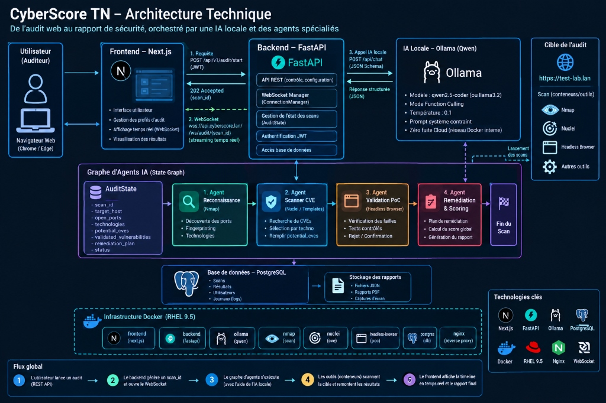

De l'audit web au rapport de sécurité souverain : conception d'une plateforme unifiée conteneurisée sur hôte durci Red Hat Enterprise Linux (RHEL 9.5), pilotée par un graphe d'agents IA et un modèle LLM local (Ollama).
Ci-dessous le synoptique architectural complet du système, illustrant les interactions entre le navigateur de l'auditeur, le backend FastAPI, l'IA locale, le graphe d'agents et les sandboxes d'outils conteneurisées :

probe_agent.run avec flux JSON stdout et gestion UTF-8.AuditState.qwen2.5-coder:7b (GGUF Q4_K_M) accéléré par GPU sur l'hôte Windows.
Les 4 agents coopèrent séquentiellement en lisant et en enrichissant un objet d'état unique AuditState sérialisé :
Arguments techniques et protocolaires précis pour répondre à toutes les questions d'implémentation du jury lors de la soutenance :
POST /api/v1/audit/start avec JWT. Le backend valide la requête, génère un UUID scan_id et répond immédiatement 202 Accepted. Le frontend ouvre alors instantanément une connexion persistante wss://api.cyberscore.lan/ws/audit/{scan_id}. Le gestionnaire ConnectionManager de FastAPI pousse chaque progression (port trouvé, CVE confirmée) en JSON directement dans la timeline du navigateur.
AuditState et s'exécutent de façon ordonnancée.
open_ports et technologies. L'Agent 2 prend le relais : en lisant les technologies (ex: Apache 2.4.52), il sélectionne uniquement les templates de vulnérabilités correspondants dans Nuclei et peuple potential_cves. L'Agent 3 (Validation PoC) teste chaque CVE via le navigateur headless pour confirmer l'exploitabilité. Enfin, l'Agent 4 synthétise les failles validées et produit le plan de remédiation final.
/api/chat en mode Function Calling avec une température stricte de 0.1.
0.1 élimine les hallucinations et assure un raisonnement déterministe. Aucune donnée d'audit, adresse IP ou vulnérabilité ne quitte le réseau privé du serveur RHEL 9.5.
docker.from_env()) pour créer des conteneurs éphémères non-root bridés en ressources.
read_only=True (système de fichiers en lecture seule), mem_limit="512m", nano_cpus=1000000000 (1 cœur CPU max), l'utilisateur non-privilégié user="1001:1001", et la directive auto_remove=True qui garantit la destruction immédiate du conteneur dès la fin du scan.
Enforcing, au filtrage strict de Firewalld et au remapping des utilisateurs (userns-remap).
container_t. Même si un binaire dans un conteneur est compromis, le noyau RHEL lui interdit formellement d'accéder au système de fichiers hôte (/etc, /root, /proc). Firewalld applique une politique DROP par défaut ne laissant ouverts que les ports strictement nécessaires (3000 pour Next.js, 8000 pour FastAPI).
| Domaine | Technologie Retenue | Statut Sécurité | Argument Technique Majeur |
|---|---|---|---|
| Système Hôte | Red Hat Enterprise Linux 9.5 | ENTREPRISE | OS de référence pour les centres de cyberdéfense (SOC). Stabilité certifiée et support natif de SELinux. |
| Contrôle d'Accès | SELinux (Security-Enhanced Linux) | ENFORCING | Confinement mandataire au niveau noyau. Empêche toute évasion de conteneur vers l'hôte. |
| Isolation Outils | Docker CE (Sandboxes Dédiées) | ISOLÉ | Évite de polluer l'OS hôte. Conteneurs éphémères avec quotas stricts de RAM (512Mo) et CPU (1 cœur). |
| API & Orchestration | FastAPI (Python) + Next.js 14 | ASYNC | Exécution non-bloquante (AsyncIO) et streaming WebSockets pour l'affichage en temps réel. |
| Moteur d'Analyse IA | Ollama + Modèle Qwen Local (8B) | SOUVERAIN | Confidentialité absolue : aucune donnée de vulnérabilité ni résultat d'audit ne transite par le cloud. |